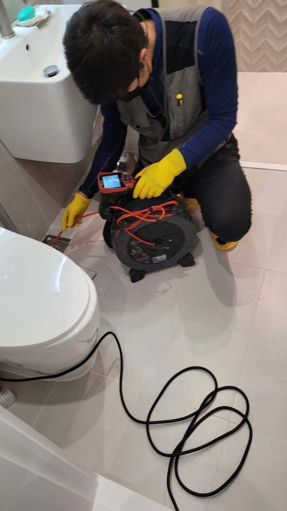

🏠 오산시 궐동하수구막힘 은계동 남촌동 하수구업체 제대로 뚫은 현장입니다!
오산 하수구막힘 전문 시공 후기

📋 작업 개요
- 위치: 오산
- 서비스 유형: 하수구막힘, 배관막힘, 맨홀막힘, 뚫는업체, 고압세척
- 작업 일시: 2022. 10. 22. 1:14
- 업체명: 하수구수사대 (010-5615-2118)
🔍 문제 상황
안녕하세요. 하수구수사대입니다.
빌라나 아파트와 같은 다세대 주택들에서 살고 있으신 분들이 많이 있습니다.
이렇게 다세대 주택에서 생활을 하시는 분들이 늘어나게 되면서 공동생활에 대한 불편함도 생기게 마련입니다. 공동주택의 경우는 인프라도 많이 형성이 되고 있기 때문에 편할 수도 있지만 공동배관을 사용을 하고 있기 때문에 메인 배관이 막히게 되는 경우에는 불편함이 많을 수 있습니다.
또한 신축 건물 같은 경우에도 하수구가 막히게 되는 일은 자주 일어날 수 있는데요. 특히 연식이 오래된 건물인 경우에는 하수구막힘이 더욱 자주 발생을 할 수 있기 때문에 주의가 필요하다고 할 수 있습니다. 그러므로 건물의 연식에 따라서 하수구 점검을 주기적으로 해주는 것이 막힘없이 쾌적한 생활을 하실 수 있는 것입니다.

🔎 원인 분석
💡 전문가 진단: 빌라나 아파트와 같은 다세대 주택들에서 살고 있으신 분들이 많이 있습니다.
이번에 방문한 현장은 오산시 궐동하수구막힘 은계동 남촌동 하수구업체 다세대 주택이었는데요.
신축으로 이사를 한지 1년이 채 되지 않았는데도 갑작스럽게 하수구가 막히게 되면서 불편함을 호소하게 된 곳이었습니다. 처음에는 다른 업체들도 불러서 작업을 해보았지만 그 당시에만 효과가 있고 결국 얼마 지나지 않아서 다시 하수구막힘이 발생했다고 합니다.
이러한 상황이 발생하게 되는 근본적인 원인 확인을 하지 못하게 되다 보니 아무래도 반복적으로 문제가 발생하게 되는 것 같습니다. 같은 전문 업체라고 하더라도 보유하고 있는 장비의 종류들도 모두 다르게 되고 기술력에도 차이가 있는 것이기 때문에 이러한 문제는 당연히 발생할 수밖에 없는 것이라고 할 수 있습니다.
경기도 오산시 오산로160번길 15 201-L16호

🔧 작업 과정
특히 하수구가 막히게 되는 원인은 아주 다양합니다.
그래서 대부분의 고객분들께서는 원인 파악을 할 수 없는 것이 대부분입니다. 배관의 경우는 바닥 아래에 매립이 되어 있기 때문에 외관상으로는 어떤 문제점이 있는지를 확인하는 것이 어렵다고 할 수 있습니다.
오산시 궐동하수구막힘 은계동 남촌동 하수구업체 가장 먼저 원인 파악을 하기 위해서 내시경 카메라를 사용하였는데요. 배관 내시경은 보이지 않는 내부의 상황을 먼저 확인해 볼 수 있기 때문에 항상 필요한 장비라고 할 수 있습니다. 또한 막힘이 발생하는 원인의 대부분은 외부 맨홀의 맨홀과 연결이 되어 있는 메인 배관 부분에서 발생을 하는 곳이 많이 있기 때문에 이러한 현장 확인이 꼭 필요한 것입니다.
내시경 카메라를 통해서 배수관의 내부를 확인하게 되면
내부에서 어떠한 상황의 원인으로 인해서 막힘이 발생하게 되었는지를 확인을 할 수 있습니다. 이번 현장의 경우는 오래도록 배관을 세척해 주지 않은 곳이었기 때문에 막힘이 발생하게 된 것을 확인을 했습니다.
보통 정기적으로 고압세척을 진행을 하게 되면 일반 가정이나 다세대 주택에서도 같은 메인 배관을 사용하는 세대가 많이 있습니다. 그러므로 배관의 세척은 항상 필요한 것이라고 할 수 있습니다. 아파트 같은 경우는 따로 관리실이 있기 때문에 내부적으로 확인을 하고 세척을 요청하기도 하지만 주택의 경우에는 그렇지 못하는 곳들이 많이 있습니다.
한 세대에서만 문제가 되는 경우에는 그 세대에서만 시공을 부담하는 것이 맞다고 할 수 있습니다.


✅ 작업 완료
오산시 궐동하수구막힘 은계동 남촌동 하수구업체 하수구수사대를 통해서 배관 세척을 하기 시작하였는데요. 배관 내시경을 통해서 내부를 확인을 하면서 배관의 내부에 있는 이물질들을 모두 깨끗하게 제거를 하였습니다.
반복적인 세척 작업을 통해서 이물질 제거뿐만 아니라 악취 제거까지 모든 것을 없앨 수 있었습니다. 하수구막힘은 이렇게 전문가를 통해서 해결을 하시는 것이 시간과 비용적으로도 훨씬 도움이 될 수 있습니다.


⚠️ 하수구 배관 막힘 예방 및 관리 가이드
- ✅ 머리카락, 비닐, 물티슈 등 물에 분해되지 않는 이물질은 하수구 유입을 절대 금지해 주세요.
- ✅ 하수구 거름망을 씌우고 모여진 이물질은 주기적으로 쓰레기통에 바로 비워주셔야 합니다.
- ✅ 배관 노후가 심할 경우 이물질이 더 쉽게 걸리므로 주기적인 배관 세척(고압세척 등)을 권장합니다.
- ✅ 작업 후 1년 이내 재발 시 하수구수사대에서 무상 A/S 보증 서비스를 제공합니다.
💡 핵심 정리
- 확실한 장비 작업(내시경 점검 및 샤프트 스케일링)으로 원인을 뿌리 뽑습니다.
- 작업 후 1년 이내에 동일한 부위 재발 시 100% 무상 A/S 서비스를 보장합니다.
- 서울 · 경기 · 인천 전 지역에 24시간 언제든 긴급 출동할 수 있도록 항시 대기 중입니다.
❓ 자주 묻는 질문 (FAQ)
🚨 오산 하수구막힘 문제로 고민이신가요?
정확한 원인 진단과 확실한 시공으로 재발 없는 해결을 약속드립니다.
24시간 긴급 출동 | 서울 · 경기 · 인천 전지역 | 1년 내 재발 시 무상 A/S